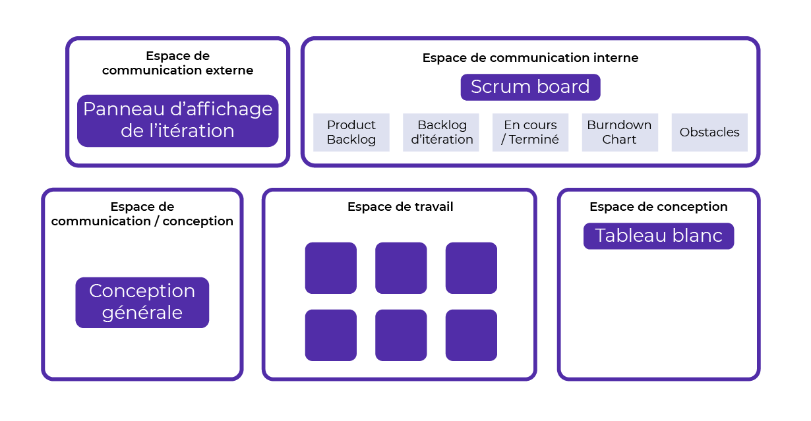

Scrum est un cadre ou canevas (framework, en anglais) simple et efficace qui repose sur 3 piliers :
Je vous conseille de prêter une attention particulière à la transparence. 👀 C'est un pilier souvent malmené dans le modèle Scrum.
Mettez en œuvre des leviers efficaces afin de le valoriser :
C'est la transparence qui favorisera le contrôle du modèle Scrum.
La participation active du client dans votre gestion du projet est un principe incontournable de toutes les pratiques agiles. Vous devez définir avec lui les fonctionnalités à réaliser afin de développer son produit ou son service. Cependant, votre client peut rencontrer plusieurs difficultés avec le Scrum :
Le modèle Scrum propose un rôle de Product Owner ! Vous intégrez dans votre équipe une personne qui va se charger de garantir les intérêts de votre client. 🤑 Ce "propriétaire du produit" devient donc le seul qui peut compléter ou modifier à tout moment la liste des fonctionnalités.
Le Product Owner doit être capable d'affiner les objectifs du projet sans les dénaturer ! Le Scrum Master veille à ce qu'il n'impose aucun changement radical ou arbitraire pendant la gestion du projet. Apportez-lui régulièrement de nouvelles connaissances afin de faciliter toutes ses négociations avec les développeurs.
En gestion de projet agile, l’équipe Scrum est toujours autogérée. Vous n'avez pas besoin d'un chef ou d'un gestionnaire de projet. Le Product Owner n'est pas votre supérieur hiérarchique. Je vous conseille de l'installer dans la même pièce que l'équipe. Vous devez en effet l'inviter à rester très disponible pour qu'il réponde aux questions et donne son avis.
Le Product Owner est le représentant du client. Le modèle Scrum lui confie les prérogatives suivantes :
Dans le modèle Scrum, le Product Owner fait partie intégrante de votre équipe. La réussite de votre gestion de projet sera nécessairement collective ! 🤝 Partagez ensemble les enjeux, la vision et la valeur du projet. Représentez ensemble l’équipe vis-à-vis des parties prenantes.
L'expression des besoins de votre projet se fait obligatoirement sous la forme de récits utilisateur (User Stories, en anglais). C'est une phrase simple et compréhensible avec laquelle vous décrivez précisément une fonctionnalité du produit ou du service à développer. Par exemple :
En tant que /utilisateur/, je veux /une fonctionnalité/ afin de /répondre à mon besoin/.
La liste de l'ensemble des récits utilisateur constitue le carnet de produit (Product Backlog, en anglais). C'est un document qui peut évoluer constamment au cours du projet. Contrairement au cahier des charges, vous ne devez jamais essayer de le figer !
Grâce au Product Backlog, qui est une liste ordonnée de tout ce qui pourrait être requis dans le produit, permet au Product Owner de :
On donne généralement ce rôle à une seule personne, expérimentée de préférence afin d'optimiser la valeur du projet, pas à un comité de pilotage !
Les développeurs sont en charge des opérations du projet. Ils livrent à votre client des fonctionnalités complètes à intervalles réguliers.
Les développeurs s'adressent sans intermédiaire au Product Owner. Le Scrum Master élimine tous les parasitages ou les bruits qui pourraient nuire à leurs relations. Pour y parvenir, il encadre l'activité des développeurs autour des besoins du Product Backlog.
Les développeurs ne peuvent pas être
multi-produits.
Les développeurs déterminent seuls leurs choix de
solution.
Les développeurs sont tous considérés au même
niveau.
Les développeurs estiment leur charge de travail et
déterminent leur capacité à réaliser une tâche.
Les développeurs s’organisent pour réaliser les
tâches du projet en respectant le modèle Scrum.
Les développeurs sont responsables de l’atteinte
des objectifs du projet.
Les développeurs participent à toutes les
cérémonies Scrum.
Les développeurs déterminent ce qu’ils peuvent
embarquer dans une itération.
Le modèle Scrum ne décrit pas en détail tous les aspects de la gestion de projet. Il faut en effet associer ce cadre de travail à un ensemble de pratiques agiles complémentaires.
Les développeurs doivent estimer la complexité de chaque User Story avec le Product Owner. Vous pouvez utiliser un jeu de cartes représentant différentes valeurs pour l'estimation en points des User Stories. Découvrez simultanément les cartes des participants et lancez un débat à partir des valeurs les plus extrêmes. Si nécessaire, répétez le jeu jusqu'à obtenir un consensus.
Les développeurs représentent chaque User Story sur des affichettes (bristol ou numériques). On va les répartir sur un tableau divisé en 3 colonnes : "à faire", "en cours" et "terminé". Actualisez ce tableau lors de vos réunions quotidiennes afin de visualiser la progression de l'équipe. Remettez-le à zéro en début d'itération afin d'ajouter de nouvelles User Stories.
Les développeurs listent les tâches de chaque User Story pour développer les fonctionnalités du produit ou du service. On ne doit surtout pas désigner un chef de projet chargé d'affecter ces tâches aux développeurs. Répartissez plutôt les User Stories sur la base du volontariat et de la discussion lors de vos réunions quotidiennes.
Idéalement, les développeurs sont agiles et solidaires. La gestion de projet ne sera plus ralentie par l'absence ou l'indisponibilité imprévue d'un des acteurs.
Le Scrum Master est au service des acteurs du projet pour lesquels
il remplit une mission de facilitation. Il faut réunir toutes les
conditions afin que l'équipe atteigne les objectifs du projet
préalablement fixés.
Selon moi, le rôle de facilitateur nécessite autant de qualités
professionnelles que de qualités humaines :
l'empathie, la bienveillance et l'humour
💟, par exemple.
Comment aider l'équipe à comprendre ses propres objectifs ? Comment accompagner l'équipe dans l'organisation et la réussite de ses objectifs communs ?
Voici 5 exigences à instituer pour créer des conditions de travail satisfaisantes :
Les parties prenantes ("stakeholders", en anglais) sont des personnes en dehors de l’équipe Scrum qui ont des connexions plus ou moins fortes avec le projet. Par exemple :
Ces personnes peuvent exprimer des demandes au Product Owner, et doivent répondre à ses questions. Il faut les informer régulièrement de l’avancement du projet avec différentes démonstrations.
En théorie, le modèle Scrum insiste sur l'importance d'une équipe pluridisciplinaire et polyvalente. En pratique, la gestion de projet sera certainement meilleure avec l'aide d'experts ou de spécialistes. On aura donc la liberté de former les équipiers ou recruter des prestataires externes :
Vous cherchez des compétences indispensables que
les membres de votre équipe n'ont pas.
Vous validez avec l'équipe la
participation ponctuelle d'un ou plusieurs membres
extérieurs.
Vous trouvez un expert fonctionnel pour comprendre
un besoin du projet (métier).
Vous trouvez un expert technique pour réaliser une
tâche du projet (solution).
Vous contactez
des personnes capables d'aider votre équipe à
développer le projet.
Si possible, l'équipe sera installée dans un local dédié à plein temps pour le projet. Le cas échéant, je vous préconise même de séparer cet environnement des autres activités de l'entreprise. Le local doit aussi être en mesure de répondre à toutes vos attentes logistiques :
Cette salle dédiée va favoriser votre communication, ainsi que la transparence de l'information dans votre gestion de projet. 📞 Évitez le téléphone, les courriels et les réunions afin de partager le plus de conversations possible avec l'équipe. Mettez fin aux interruptions extérieures en vous concentrant sur des indicateurs visuels. Idéalement, un(e) invité(e) extérieur(e) doit pouvoir comprendre toute votre gestion de projet agile sans poser trop de questions.
L'itération, ou sprint, est une boîte de temps d'une à quatre semaines (maximum). C'est la période au cours de laquelle une fonctionnalité complète du produit sera développée et incrémentée.
La décision d’annuler un sprint ou de le terminer prématurément ne peut être prise que par le Product Owner. Le Scrum Master pourra en effet observer avec lui que des objectifs initiaux ne sont plus atteignables. Cette fin anormale sera souvent la conséquence d’un contexte particulier et inattendu au sein de votre gestion de projet.
Il sera nécessaire d'expliciter (à l'oral comme à l'écrit) ces 5 règles durant les sprints :
Vous débutez chaque sprint par un événement rituel (ou cérémonie) destiné à définir l’objectif du sprint et son contenu. Le SM décide avec l'équipe Scrum quelles seront les User Stories à développer au cours de la prochaine itération. Il doit resté concentré sur le Product Backlog afin de définir tous ensemble l'organisation la plus pertinente pour les développeurs. 💎
La réunion de planification d'un sprint se divise en trois parties, l’objectif, le périmètre et le plan de l'itération.
Le Product Owner explique comment augmenter la valeur du produit, et l’utilité du sprint qui commence. L’équipe Scrum collabore pour définir un objectif de sprint avant la fin du Sprint Planning.
L'équipe choisit ce qui sera développé au cours du prochain sprint. Le Product Owner définit l'objectif de l'itération à partir des analyses et des évaluations du Product Backlog.
L'équipe se demande comment atteindre l'objectif du sprint. Le Scrum Master décompose le travail en journée (ou moins) afin de lister toutes les tâches des Users Stories candidates.
On réunit l'équipe Scrum une fois par jour pour partager son état d'avancement vis-à-vis de l’objectif du sprint, signaler les obstacles rencontrés et adapter le Sprint Backlog si nécessaire. Ce moment doit être considéré comme l'occasion d’échanger entre tous les équipiers, et pas uniquement de suivre la progression du projet. La Daily Scrum dure 15 minutes au maximum. Le Scrum Master peut intervenir comme facilitateur, mais ce sont principalement les développeurs qui prennent la parole à tour de rôle. Il peut aussi inviter ponctuellement les parties prenantes à assister aux réunions, sans s'impliquer.
Cette réunion permet de synchroniser l'équipe. Rappeler l'objectif de l'itération. Évaluer la progression vers cet objectif. Adapter le Sprint Backlog si besoin. Collecter et afficher les informations nécessaires à l'autogestion. Appuyez-vous sur les piliers du modèle Scrum : transparence, inspection et adaptation.
L'équipe Scrum est invitée, ainsi que les parties prenantes du projet à la Sprint Review. Ce rituel a une durée d'une heure par semaine de sprint. L'ordre du jour est toujours le même 👌 : valider ensemble l'incrément réalisé pendant le sprint par les développeurs :
Voici des exemples de sujets à aborder pendant la Sprint Review :